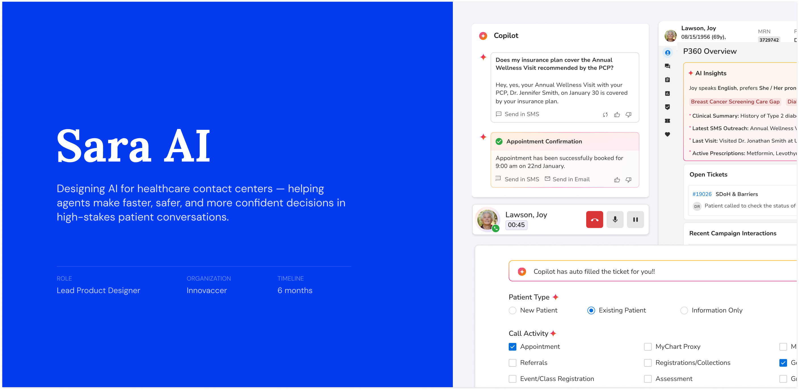
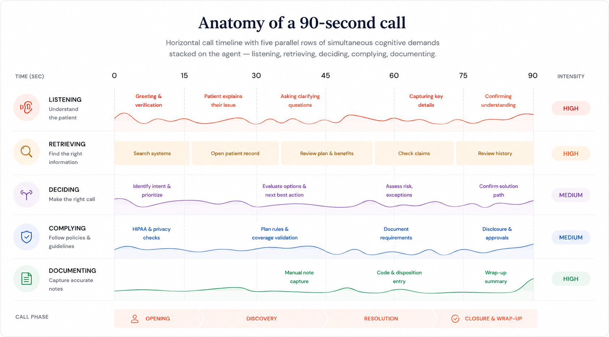
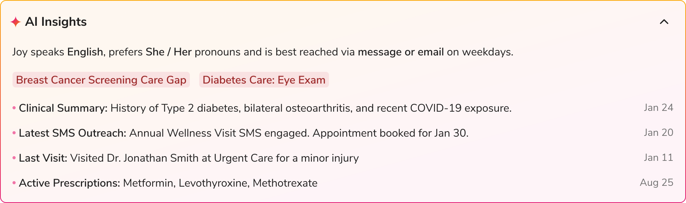
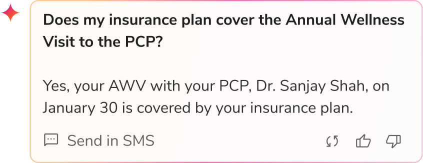
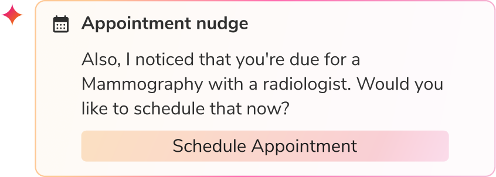
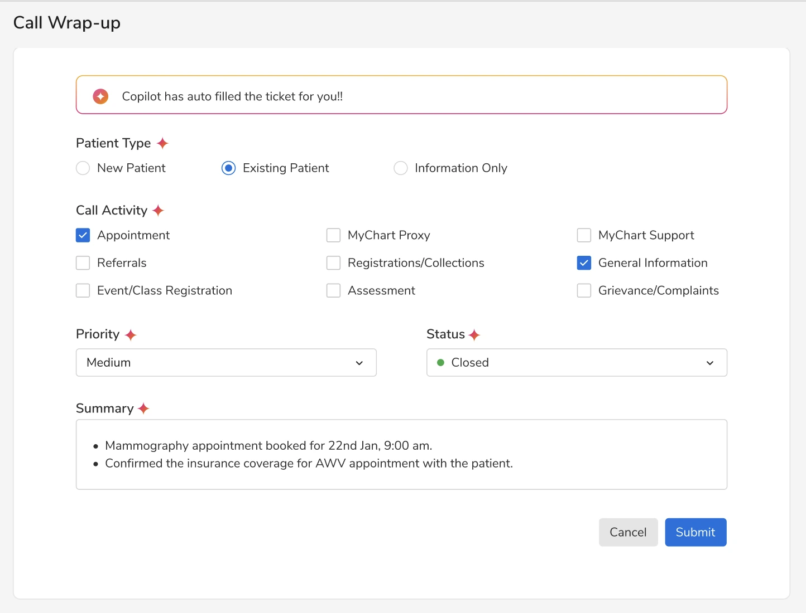
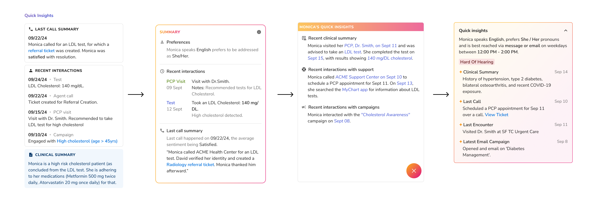
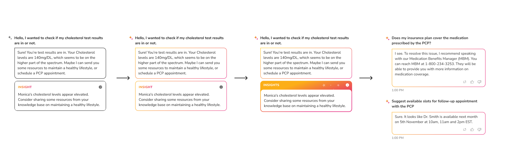
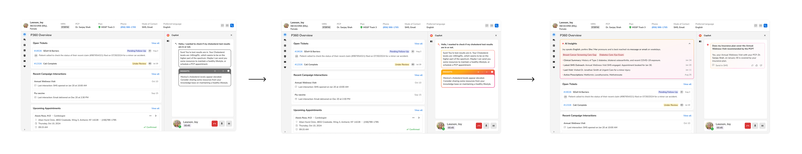

01
Overview
Sara AI is an AI-assisted workflow layer for healthcare contact center agents. It surfaces patient context, suggests next best actions, and drafts documentation in real time — while keeping the agent firmly in control.
The harder design problem wasn't how much AI to add. It was how much to hold back.
I led the design of an experience that treated AI as a workflow layer rather than a standalone feature. We chose assistive over autonomous, transparency over magic, and review-first documentation over silent automation. In a regulated workflow, restraint became the system's competitive advantage.
Average Handle Time
Reduction in AHT, with the largest gains in opening and wrap-up phases.
First Call Resolution
Improvement in FCR, driven by stronger context and grounded recommendations.
Documentation Drafting
Down from 30 seconds per ticket — roughly a 5–6× speed-up at the wrap-up step.
02
The Problem
Every call in a healthcare contact center is a compressed decision sequence. In under two minutes, an agent has to listen to a patient describe their concern, retrieve the right clinical and policy information across multiple disconnected systems and interfaces, give an answer that's both helpful and compliant, and document the entire interaction for the record. Every step is timed. Every wrong answer has downstream consequences — for the patient, the agent, and the organization.
The numbers tell one version of the story: high Average Handle Time (AHT) — the average length of a call, low First Call Resolution (FCR) — the percentage of calls resolved without the patient having to call back, and post-call documentation queues that are constantly behind. But the real problem isn't operational. It's cognitive.
On every call, the agent is doing five jobs at once:
The diagram below maps these five jobs across a single 90-second call.

In one observed call, an agent switched between four systems just to answer a basic eligibility question. The patient waited nearly two minutes — having already given most of the information themselves.
Patient histories, clinical notes, insurance details, and policy rules sit in completely separate systems. The agent has to be the one who connects them, manually, on every call.
Call time pushes agents to wrap up fast. Compliance pushes them to slow down and double-check. There's no good way to do both at once — and the agent absorbs the tension.
Looking up information, switching systems, and writing notes after every call don't show up on any dashboard. Supervisors see the symptoms — slow calls, mistakes, agents quitting — but rarely the root cause.
The real question wasn't "how do we make the tools easier to use." It was "how do we make the system do more of the work the agent is doing manually?"
03
Why It Mattered
A 60-second reduction in average call time can save millions a year across a national call volume. Small improvements compound fast at this scale.
Agent attrition runs 30–45% per year, with replacement costs of $10–25K per agent. The top reason agents leave isn't pay — it's burnout from the cognitive load described in the previous section.
AI had finally matured enough to help agents in real time. Most major healthcare organizations had announced AI initiatives — but almost none had earned the kind of agent confidence that drives real adoption.
04
Our Approach
My biggest design questions on Sara weren't about what the AI could do. They were about how it should behave with the agent. When should Sara speak up? When should it stay quiet? What should it show, what should it hide? Four early decisions shaped that behavior — and each one had an alternative we considered and rejected.
Sara could have done a lot on its own — auto-resolving queries, auto-updating records, auto-submitting documentation. The technology was capable. We didn't, because in healthcare a wrong action costs more than a slow one. Sara surfaces, suggests, and drafts. The agent does the rest.
Sara works from a curated knowledge base — a mix of clinical references, plan documents, care guidelines, and operational policies the team maintains. When a question comes up, Sara retrieves an answer from there. It doesn't invent or guess. If the KB doesn't cover something, Sara stays silent rather than improvise.
Sara doesn't disrupt the agent's workflow. It appears as a card in one part of the page — visible but not in the way. The agent can engage with it when they need help, or ignore it and keep going.
In healthcare, the agent is responsible for every word they say on a call. So for every recommendation Sara makes, the agent can see the source it came from — the document, the policy, the rule — and verify it before acting. Nothing happens behind a curtain.
These four decisions shaped how Sara behaves. Once they were settled, every screen and every interaction that came after followed from them.
05
The Solution
I designed Sara AI as four product features, each tied to a critical moment in the call. Together, they replace a multi-tool, tab-switching workspace with a single attention field where context, guidance, and documentation sit alongside the conversation.

First 30 seconds
An AI-powered patient context layer that surfaces care gaps, recent interactions, clinical history, and communication preferences in real time — enabling agents to enter conversations already informed, aligned, and ready to act.

During the call
Sara listens to the conversation from the moment it begins. When the agent might need help — a clinical reference, a policy clarification, an escalation cue — Sara shows the answer in a small card on the side of the screen.

Decision points
At decision points in a call, Sara suggests what to say next, what action to take, or what to follow up on after the call ends. The agent decides whether to use it, modify it, or ignore it.

Wrap-up
Sara auto-fills the call wrap-up ticket in real time during the call. The agent reviews, adjusts, and submits at end-of-call. Writing becomes reviewing.
06
Iterations & Explorations
Early explorations focused on how much patient information to show, and how to structure it for quick understanding on the call.

I experimented with how Sara presents real-time responses and insights without interrupting the flow of the conversation.

Moved from a stand-alone panel to an integrated workflow layer that stays contextual and lightweight.

Through multiple iterations, the product evolved from a highly visible AI assistant into a calmer, more assistive workflow layer. The final experience prioritized contextual guidance, explainability, and human control over aggressive automation.
07
Outcomes
Average Handle Time
~6 min
↓ 20% reduction
~4.8 min
Industry baseline before Sara → average after launch.
First Call Resolution
~65%
↑ 25% improvement
~81%
Industry baseline before Sara → average after launch.
Documentation Drafting
30s
↓ 5–6× faster
<5–7s
Time to draft a wrap-up ticket, before → after Sara.
Agents in production
Tickets / day
AI success rate
Total team hours saved monthly
Within months of launch, agents reported three things: they felt more confident on complex calls, less drained by end of shift, and less stuck switching between tools. The more they used Sara, the more they trusted it.
I'm no longer jumping between tabs trying to understand the patient. I can actually focus on helping them.
— Contact center agent
Sara worked under real conditions. The AI hit a 92% success rate across thousands of live tickets — with very limited hallucinations or incorrect escalations. Across the team, those gains added up to roughly 2 hours saved per agent each week.
The knowledge base wasn't complete on day one. Sara stayed silent more often than expected in the first weeks because the KB hadn't been built out enough, and some agents found that frustrating before they understood why.
Early on, the AI-Drafted Ticket mis-filled some fields consistently — patient type and call category in particular. Agents had to manually correct these on every call, which meant the wrap-up time savings only started showing up after we retrained the model.
The ambient pattern took time to land. In the first few weeks, agents missed Sara's cards entirely. They'd been trained by years of popups and alerts to look for attention-grabbing notifications — but Sara's whole approach was to not do that. The very design choice that protected the conversation also made the cards easier to overlook. We had to find a balance: visible enough to be noticed, quiet enough to not break the call.
The same design approach scaled beyond contact centers. Sara's Referral Copilot cut referral processing from 6–8 minutes down to 1–2 minutes — helping a partner organization quadruple referral volume without adding staff.
Sara worked because agents wanted to use it.
08
Reflections
Four things I'll start the next AI project with.
The easy decisions are about adding features. The hard ones are about saying no.
No matter how smart the AI is, if people don't actually trust it enough to use it, it doesn't matter.
AI that demands attention in the middle of a call breaks more than it helps. The conversation matters more than the AI.
What lasts is the team's understanding of how the AI should behave — when to speak up, when to stay quiet, what to show, what to hide.